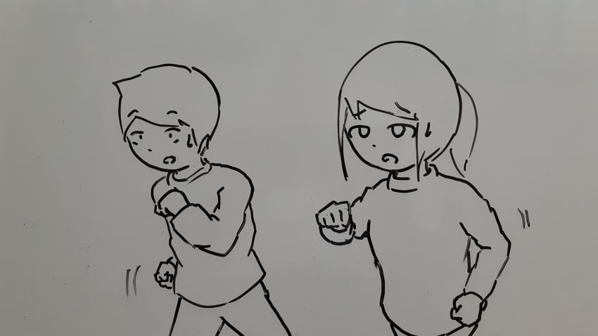
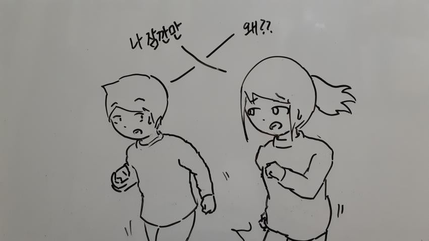
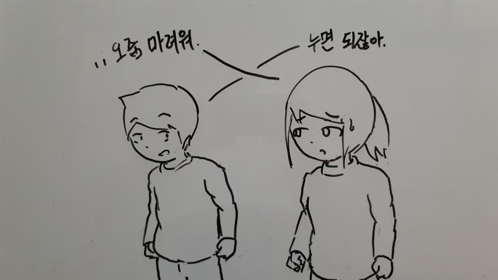
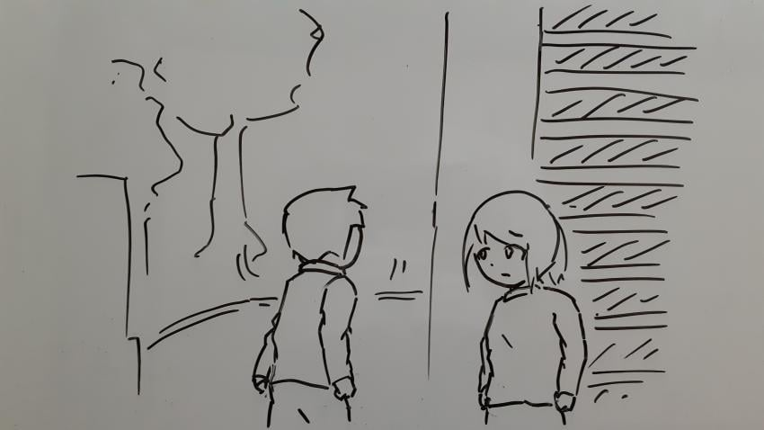
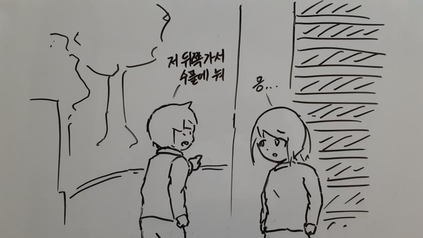
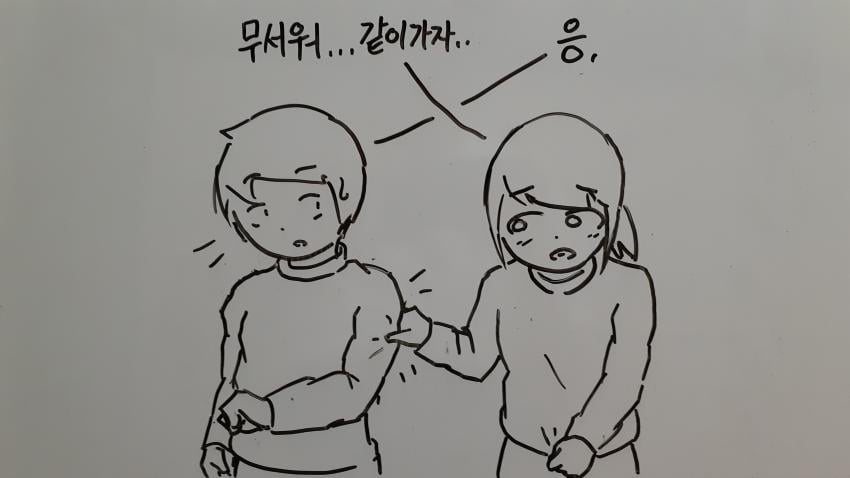
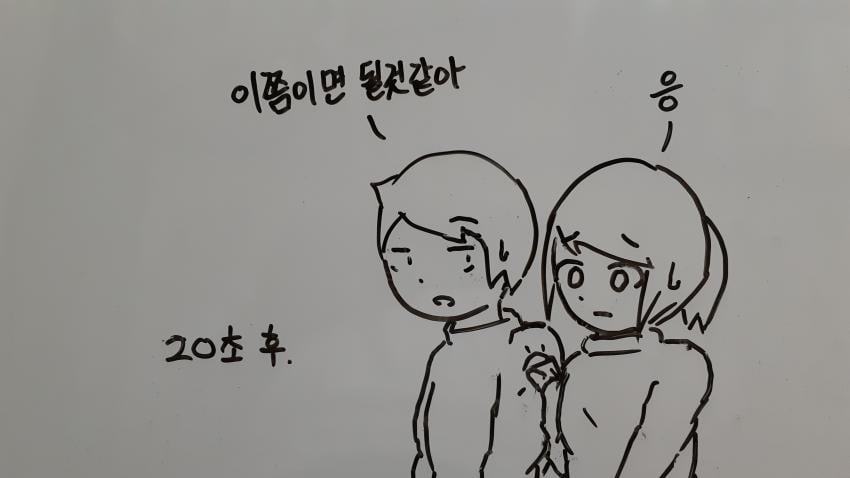
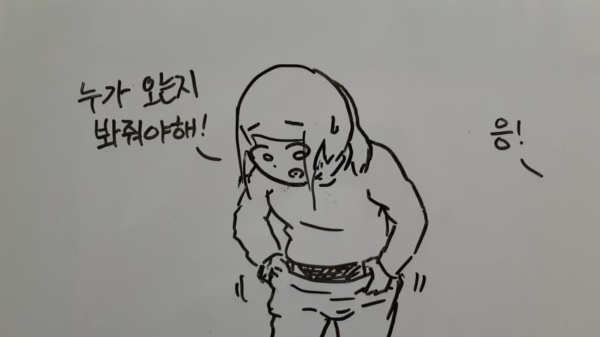
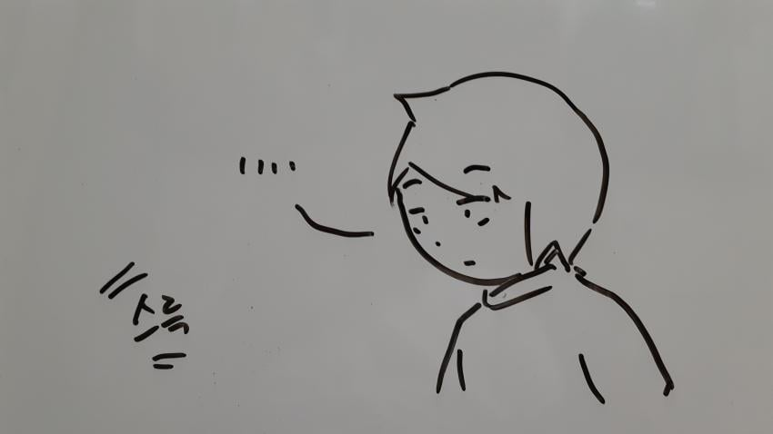
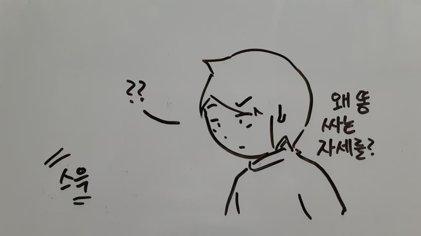
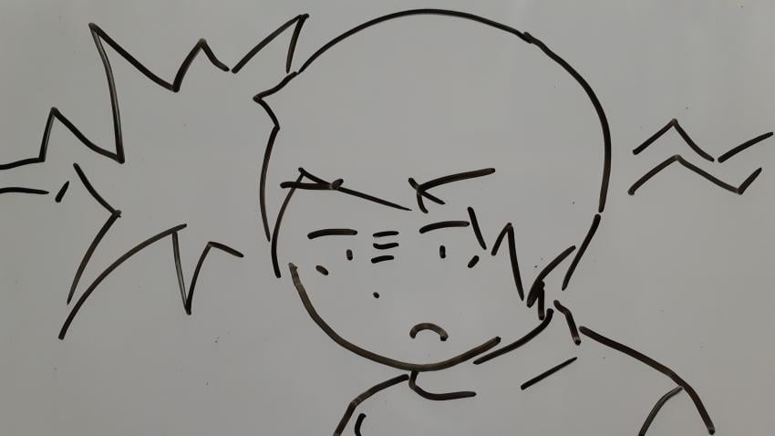
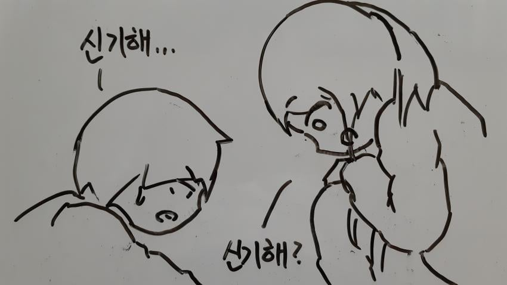
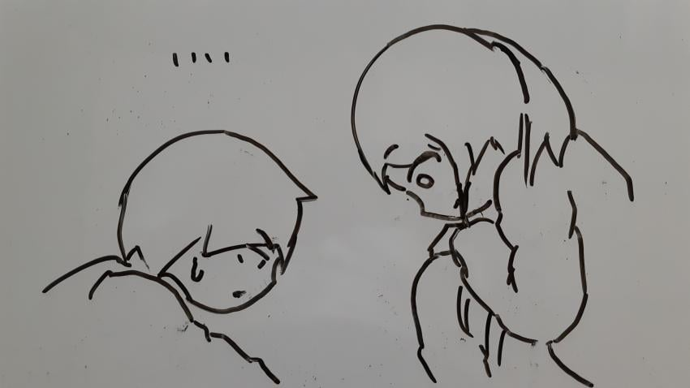
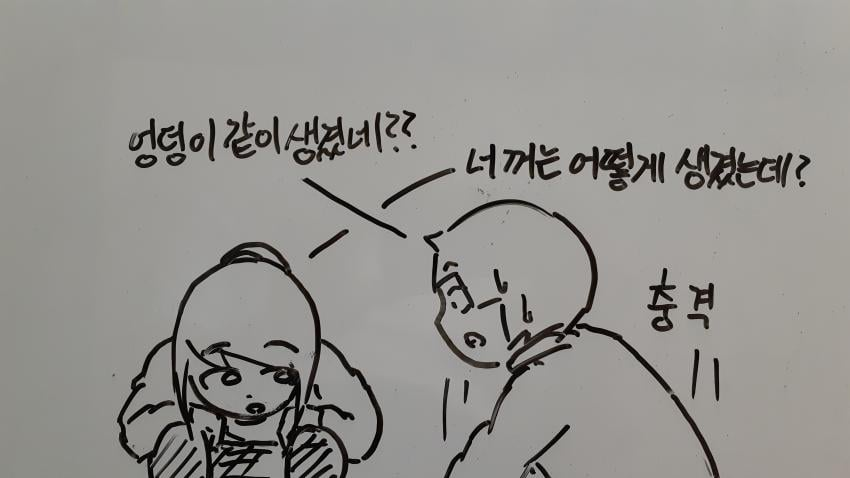
나도 어릴땐 시골에 살았는데 저거랑 비슷한 경험이 있음














나도 어릴땐 시골에 살았는데 저거랑 비슷한 경험이 있음
말을 하는 시간 순서에 따라 왼쪽에서 오른쪽으로 읽어야해서
내가 하고 싶었던 말은 시간 순서에 따라서 말을 한다고 하면 말 하는 사람 위에 말풍선을 놓고 시간 순서에 따라 위쪽 아래쪽으로 두는게 낫지 않나 싶었던거임
말풍선을 상대 머리에 두고 굳이 x자로 표시하는것보다 ㅇㅂㅇ
몰랐대!
별로
그럴수 있지
캐릭터 위에 말풍선 놓고, 그걸 위아래 순서대로 쭉 그린다? 그러면 컷이 너무 많아지잖아.
니 말대로 X로 꼬인 게 싫으면 걍 캐릭터를 말풍선 밑으로 보내면 될듯? 말풍선은 순서가 정해져있으니.
싫은건 아니고 궁금해서
걍 취미로 그리나보지
https://youtube.com/shorts/PFxfx4N6Lek?si=bbeRgiG93INVyUz8
나는 대학생 1학년때 예비역 남자 선배랑 맞똥해본적있음
도대체 어떤 상황이였길래 맞똥을?
똥싼곳이 교수님이 산속에 직접 만든 산장이었음.
그러다보니 전기도 안들어오고, 화장실도
똥싸면 밑으로 떨어지는 자유낙하식이었음.
선배들이랑 밤에 술먹고 있었는데, 배가 아파서 화장실 간다하니까 어떤 선배가 어두워서 위험하다고 같이 가자고 하더라. 가서 싸려고 준비하니 지도 싸겠다고 마주 앉아서 싸더라.
그래서 그냥 쌌음.
어... 술취했기 때문에 가능한 상황이였네;;
그 산장앞에 감나무가 있었거든?
겨울이다보니 자동으로 아이스 홍시가 생기는 수준이였어.
홍시를 많이 먹으면 매우 단단한 똥이 나온다는것과 그 똥이 떨어질때는 매우 큰 소리가 난다는걸 그때 알았음.
아니야 거기까지 알고 싶지 않았어...
그만!!!말해라!!!
그런 선배가 지금은 옆에..
..에서 똥을 싸고 있네요.
너는 튀어나와있고 나는 들어가있으니 둘이 합쳐보자
저런 경험 있긴한데 시골깡촌 90년대 얘기지 뭐
초3때인가 학원여자애가 갑자기 학원 계단으로 오라고 하더니
자기 가슴나왔다고 보여줬었는데 보면서 뭐 어쩌라는거지 싶었었는데
신기하긴 해
나도 유치원생때 비슷한거 있엇음 서로 비벼봄 ㅋ


여자는 앙
X자 만들어줄게
왜 말풍선을 반대로 놓고 선을 x자로 표시하는것이지?